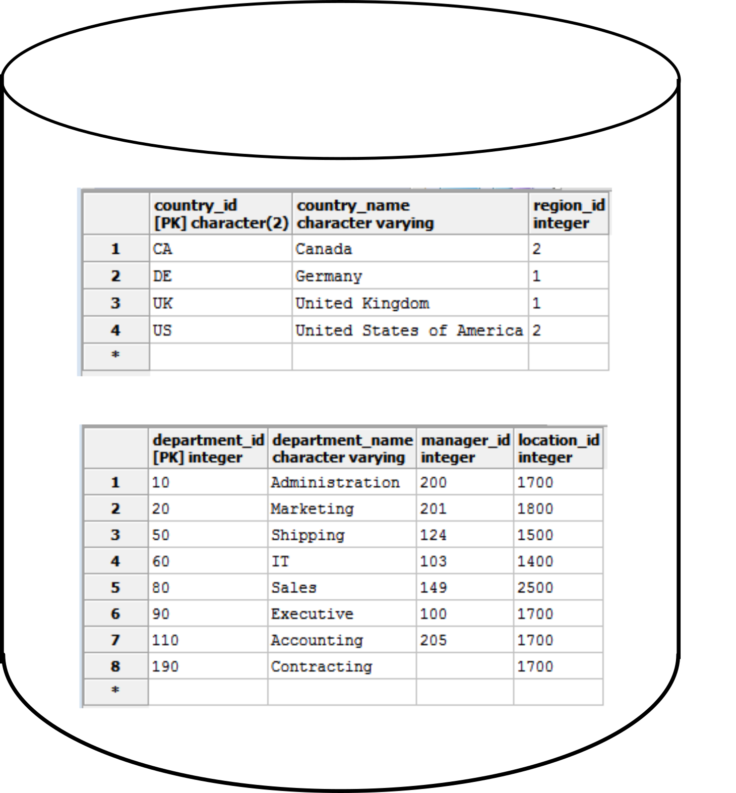

Задачи урока
В конце урока вы будете знать:
- Задачи данного курса
- Основные возможности Postgre SQL 9.4
- Теоретические и физические аспекты реляционной БД
Задачи курса
В конце курса вы будете уметь:
- Извлекать данные из таблиц при помощи SELECT запросов
- Создавать отчеты с сортировкой и фильтрами
- Использовать SQL функции для настройки данных в отчетах
- Использовать DML запросы для изменения данных
- Извлекать метаданные об объектах БД
Концепция реляционных БД
- В 1970 году Эдгар Франк «Тед» Кодд издал первую работу по реляционной модели данных
- Она стала основной для Систем Управления Базами Данных (СУБД)
- Компоненты реляционной модели данных:
- Структура - данные в базе представляют собой набор отношений (таблиц)
- Манипуляции - множество операций для изменений данных
- Целостность - критерии точности и согласованности данных
Реляционная база данных
это множество отношений (двумерных таблиц)
